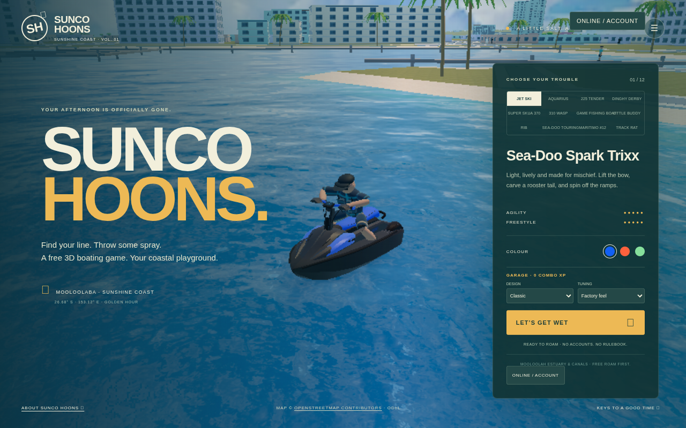
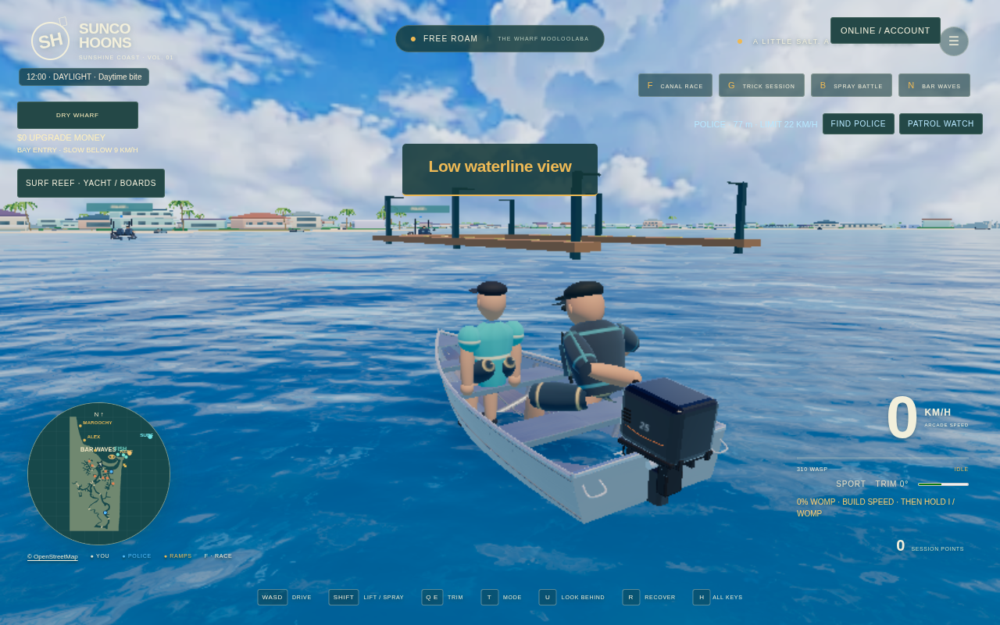

Jet skis
Choose the Sea-Doo Spark Trixx or a touring-style ski. Carve turns, throw falling sprays and practise bow rides.
Mooloolaba · Sunshine Coast · Free online game
Sunco Hoons is a free 3D boating game you play in your browser. Launch beside The Wharf and explore a coastal playground inspired by Mooloolaba's canals and the Mooloolah River estuary on Queensland's Sunshine Coast.
Drive jet skis, race boats and aluminium tinnies. Fish beyond the bar, surf the reef break, or bring a friend into an online world. Play solo without signing up; create an account when you want to join multiplayer.
Play Sunco Hoons →
Choose the Sea-Doo Spark Trixx or a touring-style ski. Carve turns, throw falling sprays and practise bow rides.
Drive the Aquarius Thundercat, a Super Skua tinny or the Maritimo-inspired offshore racing cat. Find clear water and open the throttle.
Choose the 225 Tender or the new 310 Wasp, with its curved silver hull and 25 hp-labelled outboard. Build a womp, lift the bow and carve through the canals.
Free roam is the main mode. Cruise past waterfront homes, cross under bridges, visit the marina and head toward the river mouth for larger waves. Computer-controlled local boaters cruise the waterways, and you can spray them for fun without starting a timed battle.
Try the optional checkpoint race, trick session or stunt features when you want a challenge. Land tricks to earn upgrade money, then drive into the dry wharf to improve your boat.

Take the Game Fishing Boat offshore, cast a line, or bring a dive boat to the reef for snorkelling and spearfishing. Sell your catch at the Wharf.
Paddle a shortboard, bodyboard or big-wave board into a reef break. Two online players can also tow a wakeboard or bodyboard behind a boat or jet ski.
Sign in to join the public world, or create a private room and share its code with friends. See their boats and sprays as you explore the waterways.
On phones, turn sideways and use the touch controls. Start with Auto quality; choose Low if you need a lighter rendering setting.
Open the game in a recent browser with JavaScript and WebGL enabled, choose a boat and press Play. Solo play needs no account. Sign in for online worlds; private rooms use a shareable code. Speeds, engine performance and handling are arcade gameplay values.
Formerly known as Estuary Rats, this coastal playground is now Sunco Hoons.
Launch into Sunco Hoons →